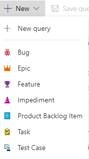

Azure DevOps Yeni Sorgu Oluşturma
Azure DevOps'ta yeni bir sorgu oluşturmak için aşağıdaki adımları izleyebilirsiniz:
- Azure DevOps projenize giriş yapın ve Boards (Panolar) sekmesine geçin.
- Sol gezinti çubuğunda Queries (Sorgular) seçeneğini bulun ve üzerine tıklayın.
- Sorgu sayfasında, "New Query" (Yeni Sorgu) düğmesine tıklayın. Bu düğme genellikle "+" sembolüyle temsil edilir.
- Yeni bir sorgu düzenleyici penceresi açılacaktır. Bu pencere, sorgunuzu oluşturmanıza ve yapılandırmanıza olanak sağlar.
- Sorgunuzun adını belirlemek için "Query Name" (Sorgu Adı) alanına bir isim yazın.
- "Columns" (Sütunlar) bölümünde, sorgunuzun sonuçlarında görünmesini istediğiniz sütunları seçin veya özelleştirin. Örneğin, "Work Item Type" (İş Öğesi Türü), "Title" (Başlık), "Assigned To" (Atanan Kişi) gibi sütunları seçebilirsiniz.
- "Filters" (Filtreler) bölümünde, sorgunuzun sonuçlarını filtrelemek için kriterler belirleyin. Örneğin, belirli bir iş öğesi durumu, öncelik, atanan kişi veya etiket gibi filtreleri kullanabilirsiniz.
- İsteğe bağlı olarak "Sort By" (Sıralama) ve "Group By" (Gruplama) seçeneklerini kullanarak sıralama veya gruplama yapabilirsiniz.
- Sorgunuzun sonuçlarını daha da özelleştirmek için "Chart" (Grafik) veya "Column Options" (Sütun Seçenekleri) gibi ilave ayarları kullanabilirsiniz.
- Sorgunuzu tamamladıktan sonra "Save" (Kaydet) düğmesine tıklayarak sorgunuzu kaydedebilirsiniz.
Yeni sorgunuz artık Queries (Sorgular) bölümünde görünecektir. Sorguya her eriştiğinizde, sonuçlarınız güncellenir ve istediğiniz verileri görüntüleyebilirsiniz. Bu şekilde sorgularınızı özelleştirebilir, proje verilerine erişebilir ve takımınızla bilgi paylaşabilirsiniz.
